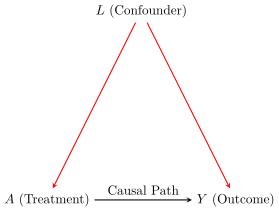

![]()
🎯 Motivation & Learning Objectives
Welcome to STAT 579! We begin our journey by tackling the most fundamental question of all: what exactly is a causal effect? It seems simple, but defining it with precision is the critical first step for every method we’ll learn.
Imagine you are a public health official. You observe that cities with higher numbers of public parks have lower rates of adult depression. Should you spend millions of dollars building new parks to improve mental health? Is the association causal, or could it be that healthier, wealthier people tend to live in cities that can afford more parks (confounding)? This is the kind of high-stakes question causal inference is designed to answer.
By the end of this module, you will be able to:
- Define a causal effect rigorously using the Potential Outcomes framework.
- Explain the “Fundamental Problem of Causal Inference” as a missing data problem.
- Articulate the crucial role of the Stable Unit Treatment Value Assumption (SUTVA).
- Justify why Randomized Controlled Trials (RCTs) are a powerful tool for overcoming the fundamental problem.
- Distinguish between association, causation, and confounding, and identify selection bias as the key obstacle in observational data.
🔬 1. The Potential Outcomes Framework
Motivation & Intuition
To move from vague “what if” questions to formal analysis, we need a language to describe the unobserved. The Potential Outcomes Framework provides this language. The core idea is that for any treatment or exposure, there are multiple “potential worlds” that could occur for each individual.
Let’s consider a simple binary treatment, \(A\). For any individual \(i\), \(A_i=1\) if they receive the treatment and \(A_i=0\) if they receive the control. We imagine that for each individual, two potential outcomes exist simultaneously as fixed attributes, even before treatment is assigned.
- \(Y_i^1\): The outcome for individual \(i\) if they were to be exposed to the treatment (\(A=1\)).
- \(Y_i^0\): The outcome for individual \(i\) if they were to be exposed to the control (\(A=0\)).
These are also called counterfactuals because once a treatment is given, one of them will be counter-to-fact.
With this, we can define the Individual Causal Effect (ICE) for person \(i\) as:
\[ \tau_i = Y_i^1 - Y_i^0 \]
💥 2. The Fundamental Problem of Causal Inference
Motivation & Intuition
The core challenge of our field is that we can only live in one world at a time. Once a person receives a treatment, we can’t see what would have happened to them on the exact same day, at the exact same time, had they not received it. That alternate reality is lost to us.
For any individual, we can only ever observe one of their potential outcomes. The other is forever hidden. We can formalize this with a “switching equation” that links the potential outcomes to the single observed outcome, \(Y_i\):
\[ Y_i = A_i Y_i^1 + (1 - A_i) Y_i^0 \]
This means causal inference is fundamentally a missing data problem. Half the data in our ideal dataset is always missing.
🤔 Concept Check
A researcher measures a patient’s cholesterol, gives them a new drug for 6 months, and measures it again. The researcher claims the change in cholesterol is the causal effect. Why is this claim flawed according to the potential outcomes framework?
Answer: This “before-and-after” comparison is not a valid causal effect. The “before” measurement is not \(Y^0\). The potential outcome \(Y^0\) is what the patient’s cholesterol would have been after 6 months without the drug. Over 6 months, many other things could have changed (diet, exercise, aging), so the “before” value is not a valid counterfactual.
🌍 3. From Individual to Average Effects
Motivation & The Statistical Solution
Since we can’t see the ICE, we aim for a more modest but achievable goal: estimating the Average Treatment Effect (ATE).
\[ \text{ATE} = \mathbb{E}[Y^1 - Y^0] \]
The ATE tells us the average effect of the treatment across an entire population.
Hand-Calculated Example: The Divine View
Imagine we are gods and can see the full potential outcomes for a population of 10 people. The outcome \(Y\) is “days of sickness,” so lower is better.
| Person (i) | \(Y_i^1\) (Sickness if Treated) | \(Y_i^0\) (Sickness if not Treated) | True ICE (\(\tau_i\)) |
|---|---|---|---|
| 1 | 5 | 7 | -2 |
| 2 | 4 | 6 | -2 |
| 3 | 6 | 8 | -2 |
| 4 | 7 | 9 | -2 |
| 5 | 2 | 4 | -2 |
| 6 | 3 | 5 | -2 |
| 7 | 8 | 10 | -2 |
| 8 | 9 | 11 | -2 |
| 9 | 1 | 3 | -2 |
| 10 | 10 | 12 | -2 |
| Average | 5.5 | 7.5 | -2.0 |
Let’s calculate the ATE by hand:
- Calculate \(\mathbb{E}[Y^1]\): Sum the \(Y^1\) column and divide by 10. \[ \mathbb{E}[Y^1] = \frac{5+4+6+7+2+3+8+9+1+10}{10} = \frac{55}{10} = 5.5 \]
- Calculate \(\mathbb{E}[Y^0]\): Sum the \(Y^0\) column and divide by 10. \[ \mathbb{E}[Y^0] = \frac{7+6+8+9+4+5+10+11+3+12}{10} = \frac{75}{10} = 7.5 \]
- Calculate ATE: \[ \text{ATE} = \mathbb{E}[Y^1] - \mathbb{E}[Y^0] = 5.5 - 7.5 = -2.0 \]
The true ATE is -2.0 days. On average, the treatment reduces sickness by 2 days.
✨ 4. The Gold Standard: Randomized Controlled Trials (RCTs)
Motivation & Intuition
How can we estimate the ATE if we are mortals and can’t see the full table? In an RCT, we randomly assign people to treatment or control. Randomization acts like a great equalizer: it ensures that, on average, the group that gets the treatment is no different from the group that doesn’t on all baseline characteristics. This property is called exchangeability.
Randomization makes the treatment assignment \(A\) statistically independent of the potential outcomes \({Y^1, Y^0}\):
\[ A \indep \{Y^1, Y^0\} \]
Because of this, the mean of the observed outcomes in the treated group is a good estimate for the population mean of \(Y^1\), and likewise for the control group and \(Y^0\).
\[ \mathbb{E}[Y \mid A=1] - \mathbb{E}[Y \mid A=0] = \mathbb{E}[Y^1] - \mathbb{E}[Y^0] = \text{ATE} \]
🚧 5. Observational Data & The Problem of Confounding
Motivation & Intuition
Most of the time in public health, we can’t randomize. People choose their own exposures. This is observational data. In this setting, the treated and untreated groups are often not exchangeable. The reasons someone chooses a treatment might be linked to the outcome. This is called confounding. A confounder is a pre-treatment variable that is a common cause of both the treatment and the outcome.

When confounding exists, the simple difference in means is no longer the ATE. It is merely a measure of association, and it is biased.
\[ \text{Association} = \mathbb{E}[Y \mid A=1] - \mathbb{E}[Y \mid A=0] \neq \text{ATE} \]
Hand-Calculated Example: The Mortal View
Let’s return to our population of 10 people. But now, we are mortals and see only the observed data. Let’s assume that sicker people are more likely to seek treatment.
- The 5 individuals with the worst potential health (\(Y^0 \ge 8\)) all seek treatment (\(A=1\)).
- The 5 individuals with the best potential health (\(Y^0 < 8\)) do not get treatment (\(A=0\)).
Here is the observed data we would see:
| Person (i) | \(A_i\) | \(Y^1_i\) (Unseen) | \(Y^0_i\) (Unseen) | Observed \(Y_i\) |
|---|---|---|---|---|
| 1 | 0 | ? | 7 | 7 |
| 2 | 0 | ? | 6 | 6 |
| 3 | 1 | 6 | ? | 6 |
| 4 | 1 | 7 | ? | 7 |
| 5 | 0 | ? | 4 | 4 |
| 6 | 0 | ? | 5 | 5 |
| 7 | 1 | 8 | ? | 8 |
| 8 | 1 | 9 | ? | 9 |
| 9 | 0 | ? | 3 | 3 |
| 10 | 1 | 10 | ? | 10 |
Let’s calculate the naive associational difference by hand:
- Calculate Mean in Treated: Sum the
Observed Yfor those with \(A=1\) and divide by 5. \[ \mathbb{E}[Y \mid A=1] = \frac{6+7+8+9+10}{5} = \frac{40}{5} = 8.0 \] - Calculate Mean in Untreated: Sum the
Observed Yfor those with \(A=0\) and divide by 5. \[ \mathbb{E}[Y \mid A=0] = \frac{7+6+4+5+3}{5} = \frac{25}{5} = 5.0 \] - Calculate Associational Difference: \[ \text{Association} = 8.0 - 5.0 = +3.0 \]
The naive analysis suggests the treatment increases sickness by 3 days, when we know from our “divine view” that it decreases it by 2 days. This is the impact of confounding! The methods in this course are all about finding ways to adjust for this bias.
💡 6. SUTVA: The Rules of the Game
All of this reasoning rests on a foundational assumption: the Stable Unit Treatment Value Assumption (SUTVA).
- No Interference: One person’s treatment status does not affect another person’s outcome.
- Violation Example: In a vaccine study, if my neighbor gets vaccinated, my chance of getting sick (\(Y_i^0\)) might decrease. My outcome is affected by their treatment.
- Consistency: An individual’s observed outcome under their actual treatment is the same as their potential outcome under that treatment.
- Violation Example: If the treatment is “exercise,” it’s ill-defined. One person might jog, another might lift weights. These are different versions of the treatment, each with its own potential outcome. Consistency requires a well-defined intervention.
📚 Appendix: Advanced Statistical Derivations
Derivation: Decomposing Association into Causation and Bias
Motivation: Let’s formally prove why the associational difference was so wrong in our hand-calculated example. We can decompose it into the true causal effect and bias terms.
The associational difference is \(\Delta = \mathbb{E}[Y \mid A=1] - \mathbb{E}[Y \mid A=0]\).
By consistency, we can write this as \(\Delta = \mathbb{E}[Y^1 \mid A=1] - \mathbb{E}[Y^0 \mid A=0]\).
Now, we add and subtract \(\mathbb{E}[Y^0 \mid A=1]\):
\[ \Delta = \underbrace{\left( \mathbb{E}[Y^1 \mid A=1] - \mathbb{E}[Y^0 \mid A=1] \right)}_{\text{Term 1: ATT}} + \underbrace{\left( \mathbb{E}[Y^0 \mid A=1] - \mathbb{E}[Y^0 \mid A=0] \right)}_{\text{Term 2: Selection Bias}} \]
- Term 1 is the Average Treatment effect on the Treated (ATT). A real causal effect, but only for the treated subgroup.
- Term 2 is Selection Bias. It compares the baseline health (\(Y^0\)) of the treated group to the baseline health of the control group. If they’re different to start, this term is non-zero.
Hand-Calculated Example of the Decomposition
Let’s use our 10-person example to calculate these terms from the “divine” table.
- Calculate ATT: We need the average causal effect just for the 5 people who got treated (Persons 3, 4, 7, 8, 10).
- Their \(Y^1\) values are (6, 7, 8, 9, 10). Mean = 8.0.
- Their \(Y^0\) values are (8, 9, 10, 11, 12). Mean = 10.0.
- ATT = \(8.0 - 10.0 = -2.0\). (In this case, the effect is constant, so ATT = ATE).
- Calculate Selection Bias: We compare the baseline health (\(Y^0\)) of the treated vs. the untreated.
- The treated group’s \(Y^0\) values are (8, 9, 10, 11, 12). Mean \(\mathbb{E}[Y^0 \mid A=1] = 10.0\).
- The untreated group’s \(Y^0\) values are (7, 6, 4, 5, 3). Mean \(\mathbb{E}[Y^0 \mid A=0] = 5.0\).
- Selection Bias = \(10.0 - 5.0 = +5.0\).
- Put it together: \[ \text{Association} = \text{ATT} + \text{Selection Bias} \]
\[ +3.0 = -2.0 + 5.0 \]
This confirms our formula! Our observed association of +3.0 was a combination of the true causal effect of -2.0 and a large selection bias of +5.0 because the sicker group selected into treatment.